「光を操る」・「負、正の感情」
光を操る
「プログラム」
ArduinoでNeoPixelを動かす
PeoPixelの色をランダム＆ゆるやかに変える
「光るLEDのカラーをランダムで出力する」
- #include <Adafruit_NeoPixel.h>
- #define PIN 9 // 信号用のピンを指定
- #define NUMPIXELS 5 // LEDの数を指定
- int brightness=50;//明るさ
- Adafruit_NeoPixel pixels(NUMPIXELS, PIN, NEO_GRB + NEO_KHZ800);
- void setup() {
- pixels.begin(); // NeoPixel出力ピンの初期化
- pixels.setBrightness(brightness);
- }
- void loop() {
- pixels.clear(); // すべてのLEDの色を0にセット
- for(int i=0; i<NUMPIXELS; i++) {
- int r=random(0,255);
- int g=random(0,255);
- int b=random(0,255);
- pixels.setPixelColor(i,pixels.Color(r,g,b));
- pixels.show();
- delay(1000);
- }
- }
「光るLEDのカラーをランダムで出力する且つ、５つあるLEDライトをランダムで出力する
（5つあるLEDをランダムで出力するので同じ個所が続けて光ることもある）」
- #define PIN 9 // 信号用のピンを指定
- #define NUMPIXELS 5 // LEDの数を指定
- int brightness=50;//明るさ
- Adafruit_NeoPixel pixels(NUMPIXELS, PIN, NEO_GRB + NEO_KHZ800);
- void setup() {
- pixels.begin(); // NeoPixel出力ピンの初期化
- pixels.setBrightness(brightness);
- }
- void loop() {
- pixels.clear(); // すべてのLEDの色を0にセット
- for(int i=0; i<NUMPIXELS; i++) {
-
- int r=random(0,255);
- int g=random(0,255);
- int b=random(0,255);
- int p=random(0,5);
- pixels.setPixelColor(p,pixels.Color(r,g,b));
- pixels.show();
- delay(1000);
- }
- }
負、正の感情 グループワークのまとめ（ポストイットと説明）
「ゴールを決めた時」の感情
感情を挙げた方のシチュエーション：サッカーをしている際にゴールを決めたとき。
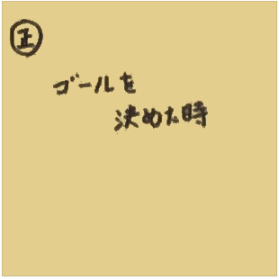 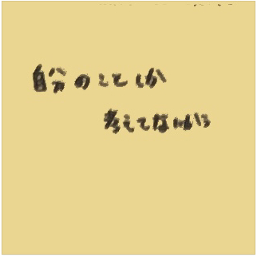
説明：ゴールまでの過程があるから目標達成したときに集団としては「貢献できた」と感じる。一方、個人感で「うれしい」「満足」と感じることが大きい。
「ゴールを決めた時」の感情POV
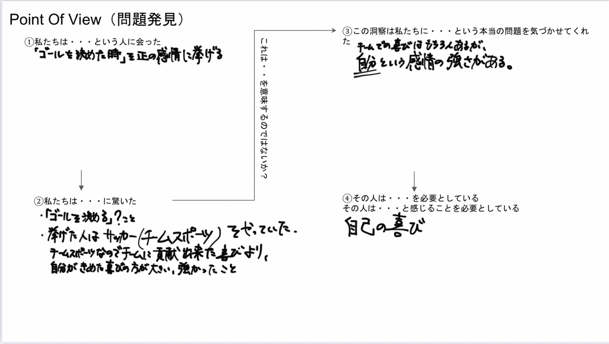
「メイクとか髪とかなんか調子良い時」の感情
感情を挙げた方のシチュエーション：朝、家でメイクやヘアセットがうまくいったとき。学校に行くまでや日中などで崩れなかったとき。
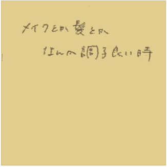
 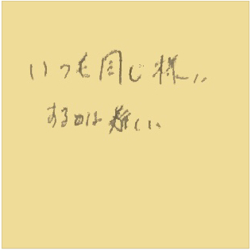
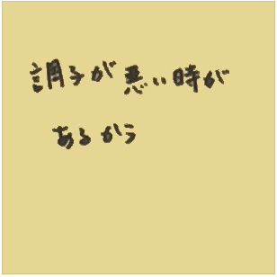
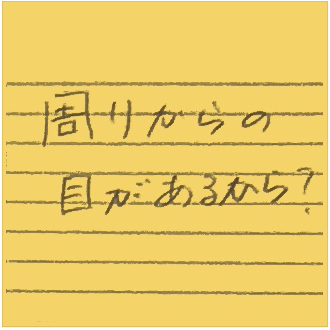
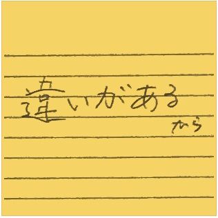
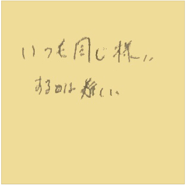
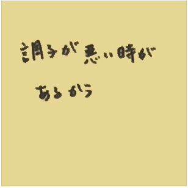
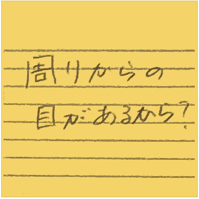
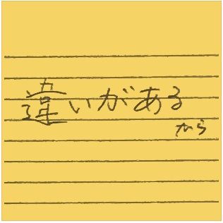説明：周りからの目やから普段から身なりを気にしているから調子の良い悪いに気が付く。調子がいい時はうれしい。
「メイクとか髪とかなんか調子良い時」の感情POV
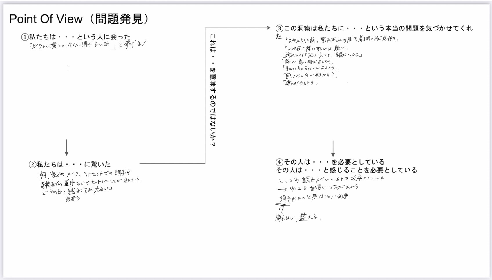
「人といて気まづいとき」の感情
感情を挙げた方のシチュエーション：初対面、あまり関わりがない人と交流するとき。
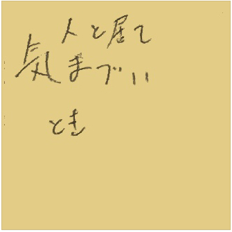 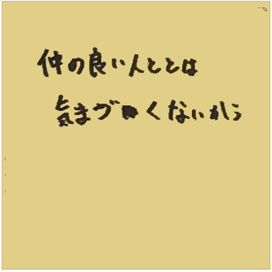 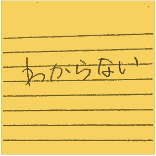 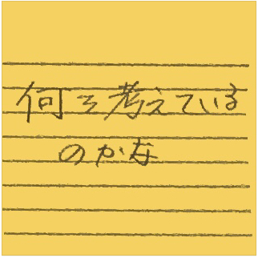 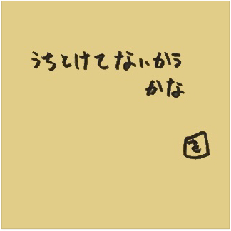 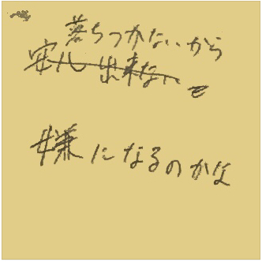
説明：仲がいい人とはならないが関わりがないやあまりないことから相手との「距離感がわからない」と感じる。また、「中途半端な対応をしてしまった」などを感じる。
「人といて気まづいとき」の感情POV
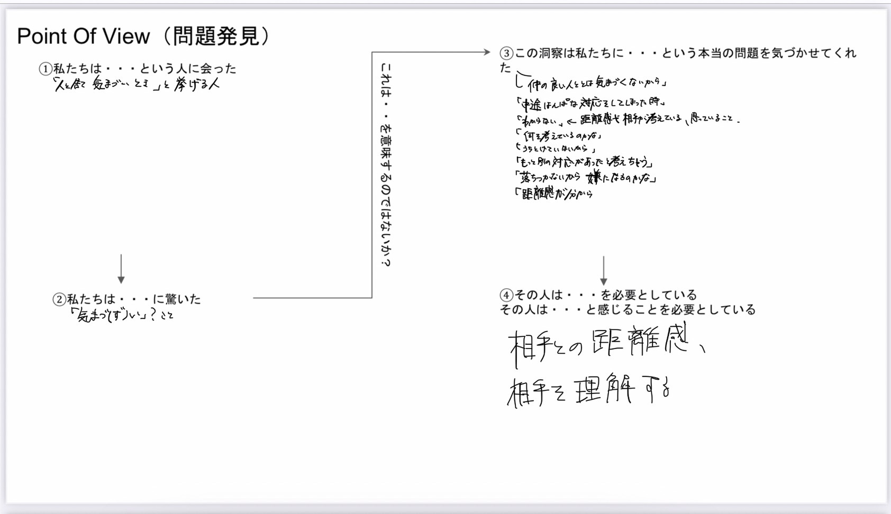
XBPトップページ